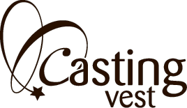

Kurs i castingprosessen m/Casting Vest: fra manus til låste roller (BERGEN) - 1 dag.
- Kategori:
- Kurs med åpning for andre
Kurs med åpning for andre
Åpent for profesjonelle skuespillere. En viss åpning for andre utøvende kunstnere med relevant erfaring. Andre kunstnere må sende CV. - Dato:
- 07.11.2014 til 07.11.2014
- Start kl :
- 10:00
- Slutt kl :
- 13:00
- Pris:
- 250,-
- Adresse:
- Cornertetaret, KONG CHRISTIAN FREDERIKS PLASS, Bergen
Ingvild Ulset fra Casting Vest holder kurs i castingprosessen: fra manus til låste roller.
{kind=link}
Hva er det man ser etter i en slik prosess?
Hvordan kan man få mest mulig ut av en castingsituasjon?
Hver av deltakerne vil også få en tilbakemelding på deres CV og headshots, og hva de kan gjøre for å forbedre dette.
Casting Vest formidler skuespillere, amatører og modeller til film-, foto- og reklameproduksjoner.
Casting Vest fra Bergen etableres nå i Oslo. Med base i Norges to største byer har selskapet et unikt register med talenter fra store deler av landet.
Ingvild Ulset har en bachelorgrad i film- og tv produksjon fra Universitetet i Bergen. Hun har jobbet som frilanser i Oslo med casting til reklamefilm, spillefilm og tv-serier. I tillegg har Ingvild erfaring innen foto, klipp, regi og som skuespiller.
Pris for medlemmer av NSF: 200,-